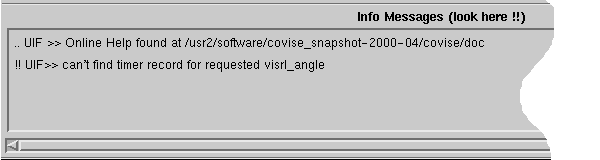
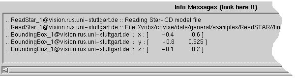

Message Area (Info
Messages)
The Message Area is a scrollable text
output window that shows warning and information text produced by modules
during their execution (see examples below) and for receiving information
sent from other partners using the Chat Line (see below).


The Message Area is used for the following
groups of messages:
-
Messages from the MapEditor (User
Interface):
The layout of these messages is:
.. UIF >> Text or
!! UIF >> Text
-
Messages from the Controller
-
Messages from the Covise Request Broker
(CRB):
-
Messages from specific modules:
The layout of these messages is:
.. Module name @ host name :: Text
or !! Module name @ host name :: Text
Warning messages are
preceeded by '!!', info messages by '..'
-
Chat Messages
(see description of Chat Line below)
The layout of these
messages (reverse video mode) is
Notes:
| Message Area (formerly called Module Information
Area) is no longer used to show data types for ports! |
| Some modules send messages to the desktop,
not to the Message Area! |
Chat
Line (for 2 or more partners
only)
This editable text field is used for sending
informations to other partners joining a COVISE session (see CSCW).
After pressing ENTER, the content is sent to all other message areas of
the participating user interfaces. A beep happens on the receiving host,
and the information text line is highlighted (reverse video mode).